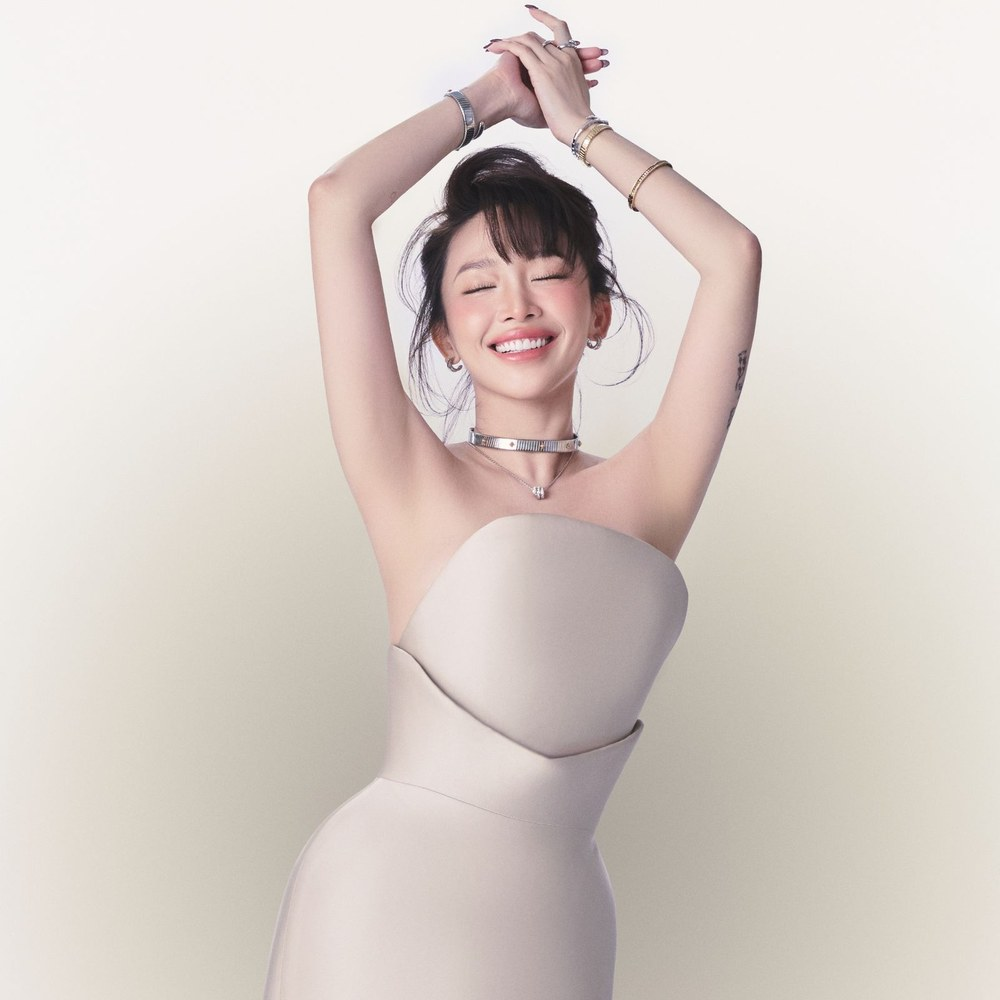

Vietnam
Artist

Tóc Tiên
Nguyễn Khoa Tóc Tiên
b. 1989
📍 Ho Chi Minh City
Tóc Tiên began performing at the age of four. At 13, she claimed to be 18 to enter a singing competition, and the following year she once again lied about her age to compete in another show.
Her mother wanted her to become a doctor. Tóc Tiên studied traditional medicine in Vietnam and biology in the United States, but eventually abandoned her studies to pursue music. This decision, along with her change in stage image, led to a serious conflict with her mother, and the two stopped speaking.
In 2016, she received an LGBT Appreciation Award for her contributions.
Country
Song
EM TIÊN
I Am Tiên
“EM TIÊN” blends traditional Vietnamese music with modern electronic production. Its chorus melody draws inspiration from quan họ folk singing.
The title contains a play on words: Tiên is part of Tóc Tiên's name, but it is also a Vietnamese word meaning “fairy”.
EM TIÊN
I Am Tiên
| Em da den day roi tat ca da duoc sap dat roi | Here I am, everything has already been arranged. |
| Giua thoi khac huy hoang em sai buoc vao vung anh sang | At this glorious moment, I stride into the light. |
| Em chi song mot lan chung ta cung chi song mot lan | I only live once, and we all only live once. |
| Em se dot tim minh, trao di het tam tinh | I'll set my heart on fire and give everything I feel. |
| Nhu canh sen van toa huong ngat thom dau cho bun vay quanh | Like a lotus that still gives off its fragrance despite the mud surrounding it, |
| Em van kien cuong doi mat voi nhung kho khan quanh minh | I remain strong as I face the hardships around me. |
| Nhu canh tre van dung o do dau gio giong giat qua nhanh | Like bamboo that stays standing even when storms rage past, |
| Chang quat nga em duoc, em day chang nhu nhuoc | Nothing can knock me down; I am not weak. |
| Nhu vang trang muoi sau em van luon giu tam long tron cang | Like the full moon on the sixteenth night, I always keep my heart whole. |
| Mang tinh yeu va mang loi ca thap sang ca thien ha | With love and song, I'll light up the entire galaxy. |
| Em tu do va em yeu het tat ca nhung dieu em co | I am free, and I love everything I have. |
| Em Tien cua nuoc Viet, chu du khap moi mien | I am Tiên of Vietnam, travelling across every land. |
| Em Tien dao buoc i a noi day | Tiên walks gracefully here, í à. |
| Tung bay ta ao giua troi quang may | The flowing panels of my dress flutter beneath the clear sky. |
| Ca len bai hat bao nguoi dam say | I sing a song that captivates so many hearts. |
| Em Tien dao buoc i a noi day | Tiên walks gracefully here, í à. |
| Em Tien dao buoc i a noi day | Tiên walks gracefully here, í à. |
| Doi chan nhu gam nhu hoa | My feet are adorned as if with silk and flowers, |
| Gieo tung buoc toi | Taking each step forward, |
| Ruc ca trong dem | Shining brightly even in the night, |
| Thap sang moi noi em den | Lighting up everywhere I go. |
| Noi dau se la xuc tac | Pain will become the catalyst |
| Dua doi tay cham anh sang | That lets my hands reach the light. |
| Thieu dot het moi rao can | I'll burn away every barrier |
| Ngan cau ca day khao khat | And sing a song full of longing and ambition. |
| Thap sang noi day | Light up this place, |
| Thap sang ngon lua ruc ro khap thien ha | Ignite a brilliant flame across the galaxy. |
| Nhu canh sen van toa huong ngat thom dau cho bun vay quanh | Like a lotus that still gives off its fragrance despite the mud surrounding it, |
| Em van kien cuong doi mat voi nhung kho khan quanh minh | I remain strong as I face the hardships around me. |
| Nhu canh tre van dung o do dau gio giong giat qua nhanh | Like bamboo that stays standing even when storms rage past, |
| Chang quat nga em duoc, em day chang nhu nhuoc | Nothing can knock me down; I am not weak. |
| Nhu vang trang muoi sau em van luon giu tam long tron cang | Like the full moon on the sixteenth night, I always keep my heart whole. |
| Mang tinh yeu va mang loi ca thap sang ca thien ha | With love and song, I'll light up the entire galaxy. |
| Em tu do va em yeu het tat ca nhung dieu em co | I am free, and I love everything I have. |
| Em Tien cua nuoc Viet, chu du khap moi mien | I am Tiên of Vietnam, travelling across every land. |
| Em Tien dao buoc i a noi day | Tiên walks gracefully here, í à. |
| Tung bay ta ao giua troi quang may | The flowing panels of my dress flutter beneath the clear sky. |
| Ca len bai hat bao nguoi dam say | I sing a song that captivates so many hearts. |
| Em Tien dao buoc noi day | Tiên walks gracefully here. |
| Em Tien dao buoc i a noi day | Tiên walks gracefully here, í à. |